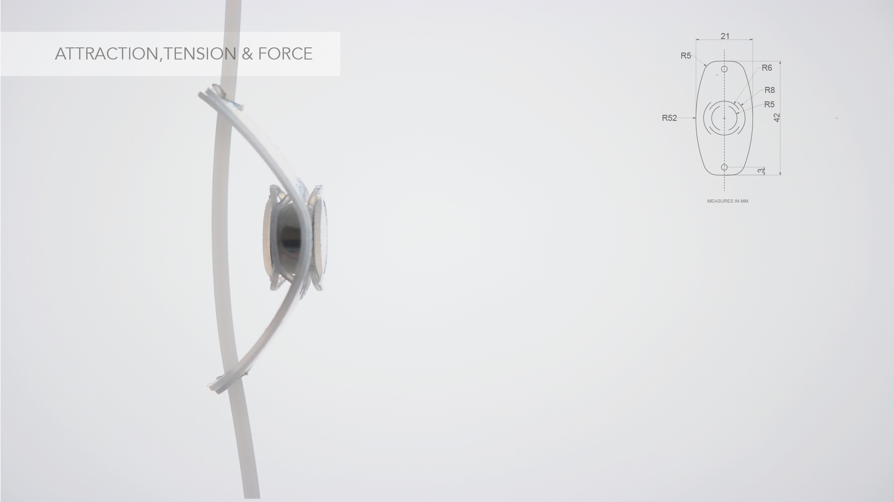

This research project aims to explore mutual gazes, separations, and linkages, to highlight relations (i.e. the “contacts”); find differences that separate the 3 study cases of growth (i.e. the “contrasts”); and search for a physical model that examines the factors of growth that link them to each other (i.e. the “confluences”).
